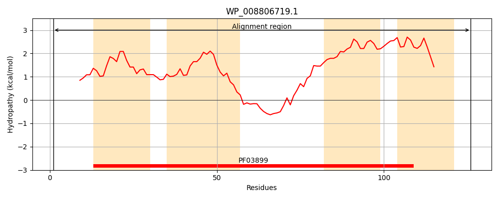
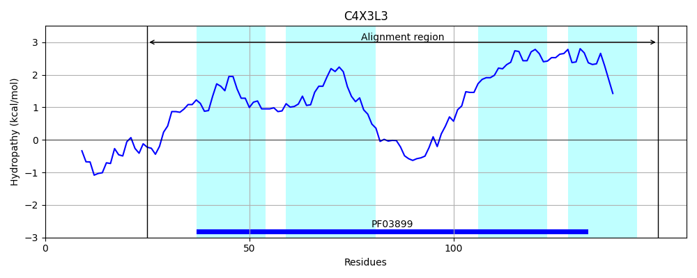
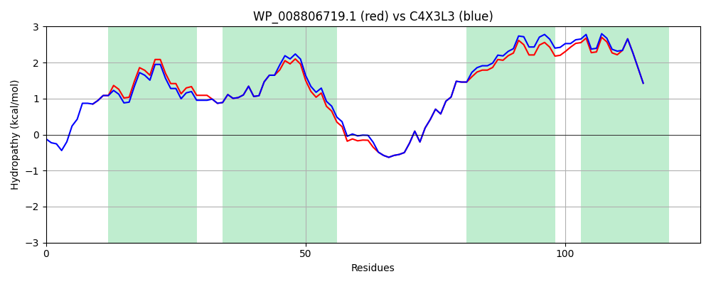

Hit Accession: C4X3L3
Hit TCID: 1.A.77.3.8
Hit Description: gnl|BL_ORD_ID|2528 gnl|TC-DB|C4X3L3|1.A.77.3.8 ATP synthase subunit I OS=Klebsiella pneumoniae subsp. pneumoniae NTUH-K2044 GN=atpI PE=4 SV=1
Mach Len: 126
e:0.000000
Query TMS Count : 4
Hit TMS Count: 4
TMS-Overlap Score: 3.850000
Predicted Substrates:CHEBI:3473;cation
BLAST Alignment:
| Protein Hydropathy Plots: | |
|---|---|
|  |  |
Pairwise Alignment-Hydropathy Plot: | |
|  | |